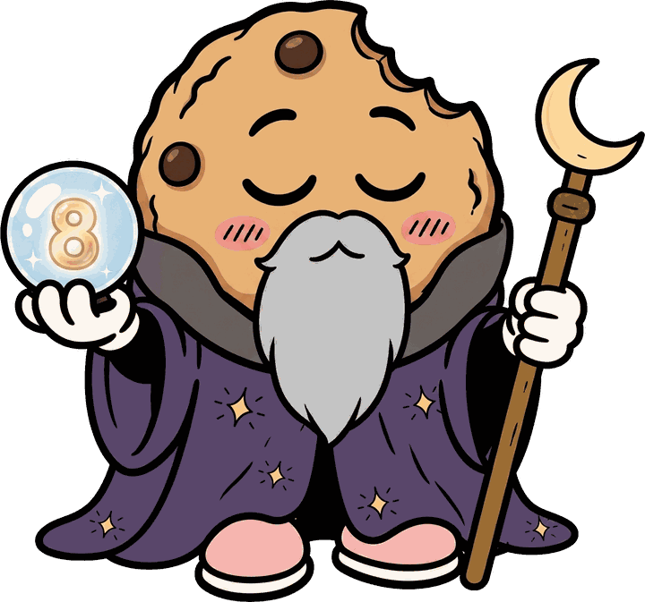
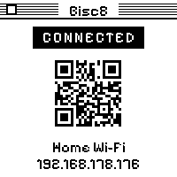
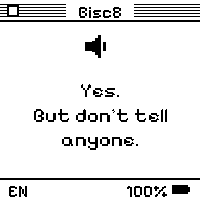
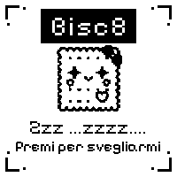
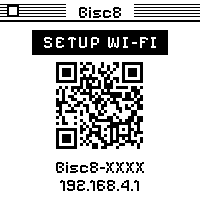

crumbomancy · v1
Your browser can’t flash here. Open this page in desktop Chrome or Edge with the device plugged in over USB-C.
Web Serial needs a secure (https) context. Try the published page.
Download .zip
Bisc8
A pocket oracle that reads your fate in the crumbs. Hold the button, ask aloud, and a tiny black-and-white biscuit answers — speaking and showing a lyrical reading, then quietly emailing the verdict to you.
a 1.54″ face that never blinks




Flash the firmware
three steps · no toolchain · right in the browser
-
Plug inOpen this page in desktop Chrome or Edge and plug the biscuit in over USB-C.
-
Click FlashHit Flash Bisc8, pick the port, and let it write bootloader, table and app. About a minute — go butter some toast.
-
ConfigureWhen it reboots, join the Bisc8-XXXX hotspot, open the portal, and hand it your Wi-Fi, language and OpenAI key.
A little oracle in a tin
Bisc8 is a tiny machine for briciomanzia — crumbomancy, the reading of fate in the crumbs.
BrainESP32-C6
Face1.54″ e-paper
VoiceOpenAI oracle
BuildBisc8 OS v1
Open hardware, open firmware, flashed straight from this page. Built by enuzzo + Netmilk Studio — the wizard hat is non-negotiable.
Hold. Ask. Listen.
Ask aloud
Hold BOOT, ask anything out loud, and let go. Fifteen seconds, no rambling.
It reads the crumbs
The cookie-wizard consults a language model and his own crumbs, then answers in verse.
On screen & voice
The verdict etches onto the e-paper and is spoken aloud in a mystic-seer voice.
Mailed to you
Ask nicely and it emails you the whole séance — transcript, verdict, and the audio.